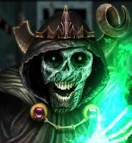

|  | BIOGRAFIA |
|---|---|
|
O Lich é a personificação da morte e destruição, uma entidade antiga e maligna cuja única missão é exterminar toda a vida no universo. Desprovido de qualquer empatia ou humanidade, ele é a própria essência do fim, falando com uma voz cavernosa e hipnótica que carrega o peso de eras de destruição. Imortal e quase indestrutível, o Lich representa a ameaça definitiva, manipulando eventos através dos tempos para alcançar seu objetivo sombrio de transformar toda existência em nada. | |
| ARMAS | |
|
Magia Necromântica: Controle absoluto sobre morte e decadência, capaz de animar mortos e corromper seres vivos. Chamas Verdes da Destruição: Fogo místico que desintegra matéria e consome almas, impossível de extinguir por meios convencionais. Sopro da Morte: Exalação tóxica que mata instantaneamente qualquer ser vivo que a inale. | |
| Habilidades | |
|
Imortalidade: Mesmo quando destruído, pode retornar através de diferentes meios, tornando-se quase impossível de eliminar permanentemente. Possessão Corporal: Capaz de tomar controle de corpos físicos para manifestar-se no mundo material. Manipulação Temporal: Conhecimento e capacidade de atravessar dimensões e linhas temporais alternativas. |